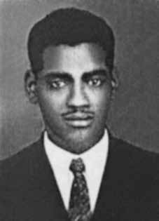

José
de Souza
CIRCUNSTÂNCIAS DA MORTE
José de Souza morreu no dia 17 de abril de 1964. De acordo com a narrativa apresentada pelos órgãos da repressão, no dia 8 de abril de 1964, José de Souza foi detido para averiguações. Menos de dez dias depois, seu corpo foi encontrado sem vida no pátio da Polícia Central no Rio de Janeiro, sede do Departamento de Ordem Política e Social do então Estado da Guanabara (DOPS/GB). Conforme nota oficial divulgada pelas autoridades policiais, às 5 horas do dia 17 de abril, José de Souza haveria se suicidado atirando-se da janela do terceiro andar do prédio onde estava preso. O atestado de óbito, expedido dois dias após a morte, confirma o óbito por choque ao indicar como causa mortis “fratura de crânio com hemorragia cerebral”. No dia seguinte, na edição de O Globo de 18 de abril de 1964, foi publicada reportagem com título “Ferroviário preso como agitador suicidou-se saltando do 3º andar”, reproduzindo a versão sobre a morte divulgada pelos órgãos de segurança. Nas primeiras linhas da reportagem, o jornal afirmava que José de Souza e um grupo de companheiros haviam sido detidos por “suspeitas de atividades subversivas em conivência com o Sindicato dos Ferroviários de Leopoldina”, bem como que, de acordo com os companheiros de José ouvidos após a morte do ferroviário, o mesmo “se mostrava nervoso e excitado, quando, com eles, foi levado, na noite anterior, para aquela sala”. Pouco mais de três décadas após a morte de José de Souza, em depoimento prestado à Comissão de Direitos Humanos e Assistência Jurídica da Ordem dos Advogados do Brasil (OAB/RJ), José Ferreira – que esteve preso no DOPS/GB com José de Souza –, lançou luz sobre os acontecimentos que provocaram a morte do ferroviário. José Ferreira contou ter chegado às dependências do DOPS/GB por volta do dia 08 de abril de 1964 e ter sido mantido em uma sala do edifício com cerca de cem pessoas, inclusive José de Souza. Relatou que ao longo do período em que estiveram detidos perceberam que “quando os presos iam prestar depoimento, voltavam normalmente desmaiados” e que “constantemente escutava gritos e tiros de metralhadora nas dependências do DOPS”. Disse que José de Souza se encontrava bastante nervoso pelo fato de estar preso. Segundo o relato, no dia 17 de abril, os presos que ocupavam a sala mencionada foram acordados por agentes da repressão avisando que o corpo de José de Souza havia sido encontrado no pátio da delegacia. Em janeiro de 1996, a família de José de Souza ingressou com requerimento junto à CEMDP. O relator do processo acolheu versão de morte por suicídio. De qualquer forma, o pedido foi deferido, tendo em vista que “José de Souza encontrava-se em poder do Estado e os agentes não tomaram as mais elementares cautelas que a situação exigia”. Está demonstrado que José de Souza morreu quando estava preso em um centro de tortura e assassinato de opositores políticos da ditadura militar. Dessa forma, ainda que as investigações até o presente realizadas sejam insuficientes para atestar a falsidade da versão de suicídio, a morte será de qualquer forma de responsabilidade do Estado. José de Souza era mantido preso em ambiente em que ouvia e testemunhava os efeitos da tortura de outros presos e era submetido ele próprio a, no mínimo, tortura psicológica. Os restos mortais de José de Souza foram enterrados no Cemitério de Inhaúma, no Rio de Janeiro.
José de Souza died on April 17, 1964. According to the narrative presented by the repression bodies, on April 8, 1964, José de Souza was detained for investigation. Less than ten days later, his body was found lifeless in the courtyard of the Central Police in Rio de Janeiro, headquarters of the Department of Political and Social Order of the then State of Guanabara (DOPS/GB). According to an official note released by the police authorities, at 5 am on April 17, José de Souza committed suicide by throwing himself from the window of the third floor of the building where he was imprisoned. The death certificate, issued two days after death, confirms death due to shock by indicating “skull fracture with cerebral hemorrhage” as the cause of death. The following day, in the edition of O Globo on April 18, 1964, a report was published with the title “Railway worker arrested as agitator committed suicide by jumping from the 3rd floor”, reproducing the version of the death published by security agencies. In the first lines of the report, the newspaper stated that José de Souza and a group of his companions had been detained on “suspicion of subversive activities in collusion with the Leopoldina Railway Workers Union”, as well as that, according to José’s companions interviewed after the railway worker’s death, he “appeared nervous and excited, when, with them, he was taken, the night before, to that room”. Just over three decades after José de Souza's death, in a statement given to the Human Rights and Legal Assistance Commission of the Brazilian Bar Association (OAB/RJ), José Ferreira – who was imprisoned at DOPS/GB with José de Souza – shed light on the events that led to the railway worker's death. José Ferreira said he arrived at the DOPS/GB facilities around April 8, 1964 and was kept in a room in the building with around a hundred people, including José de Souza. He reported that throughout the period in which they were detained they noticed that “when the prisoners went to give statements, they usually returned fainted” and that “they constantly heard screams and machine gun fire on the DOPS premises”. He said that José de Souza was very nervous about being arrested. According to the report, on April 17, the prisoners who occupied the aforementioned room were woken up by repression agents informing them that José de Souza's body had been found in the police station courtyard. In January 1996, José de Souza's family filed an application with CEMDP. The case's rapporteur accepted the version of death by suicide. In any case, the request was granted, considering that “José de Souza was in the power of the State and the agents did not take the most basic precautions that the situation required”. It has been demonstrated that José de Souza died when he was imprisoned in a center for the torture and murder of political opponents of the military dictatorship. Thus, even if the investigations carried out to date are insufficient to confirm the falsehood of the suicide version, the death will in any case be the responsibility of the State. José de Souza was held in prison in an environment where he heard and witnessed the effects of torture on other prisoners and was himself subjected to, at the very least, psychological torture. José de Souza's mortal remains were buried in the Inhaúma Cemetery, in Rio de Janeiro.
José de Souza falleció el 17 de abril de 1964. Según el relato presentado por los órganos de represión, el 8 de abril de 1964 José de Souza fue detenido para ser investigado. Menos de diez días después, su cuerpo fue encontrado sin vida en el patio de la Policía Central de Río de Janeiro, sede del Departamento de Orden Político y Social del entonces Estado de Guanabara (DOPS/GB). Según nota oficial difundida por las autoridades policiales, a las 5 de la mañana del 17 de abril, José de Souza se suicidó arrojándose desde la ventana del tercer piso del edificio donde estaba recluido. El certificado de defunción, emitido dos días después del fallecimiento, confirma la muerte por shock al indicar como causa de la muerte “fractura de cráneo con hemorragia cerebral”. Al día siguiente, en la edición de O Globo del 18 de abril de 1964, se publicó un reportaje con el título “Trabajador ferroviario detenido como agitador se suicidó lanzándose desde el 3er piso”, reproduciendo la versión de la muerte publicada por los organismos de seguridad. En las primeras líneas del reportaje, el periódico afirmaba que José de Souza y un grupo de sus compañeros habían sido detenidos por “sospechas de actividades subversivas en connivencia con el Sindicato de Trabajadores Ferroviarios de Leopoldina”, así como que, según los compañeros de José entrevistados tras la muerte del ferroviario, éste “parecía nervioso y excitado, cuando, con ellos, fue llevado, la noche anterior, a esa habitación”. A poco más de tres décadas de la muerte de José de Souza, en una declaración ante la Comisión de Derechos Humanos y Asistencia Jurídica de la Asociación de Abogados de Brasil (OAB/RJ), José Ferreira – que estuvo encarcelado en el DOPS/GB con José de Souza – arrojó luz sobre los hechos que llevaron a la muerte del ferroviario. José Ferreira dijo que llegó a las instalaciones del DOPS/GB alrededor del 8 de abril de 1964 y fue retenido en una habitación del edificio con alrededor de un centenar de personas, entre ellas José de Souza. Informó que durante todo el período que estuvieron detenidos observaron que “cuando los detenidos iban a declarar, generalmente regresaban desmayados” y que “escuchaban constantemente gritos y disparos de ametralladoras en las instalaciones del DOPS”. Dijo que José de Souza estaba muy nervioso por ser arrestado. Según el informe, el 17 de abril los detenidos que ocupaban la referida habitación fueron despertados por agentes de represión informándoles que el cuerpo de José de Souza había sido encontrado en el patio de la comisaría. En enero de 1996, la familia de José de Souza presentó una solicitud ante el CEMDP. El relator del caso aceptó la versión de muerte por suicidio. De todas formas, la solicitud fue estimada al considerar que “José de Souza estaba en poder del Estado y los agentes no tomaron las precauciones más básicas que la situación requería”. Está demostrado que José de Souza murió mientras estaba recluido en un centro de tortura y asesinato de opositores políticos de la dictadura militar. Así, aunque las investigaciones realizadas hasta la fecha sean insuficientes para confirmar la falsedad de la versión del suicidio, la muerte será en cualquier caso responsabilidad del Estado. José de Souza estuvo recluido en prisión en un entorno en el que escuchó y fue testigo de los efectos de la tortura sobre otros presos y él mismo fue sometido, como mínimo, a tortura psicológica. Los restos mortales de José de Souza fueron enterrados en el Cementerio de Inhaúma, en Río de Janeiro.